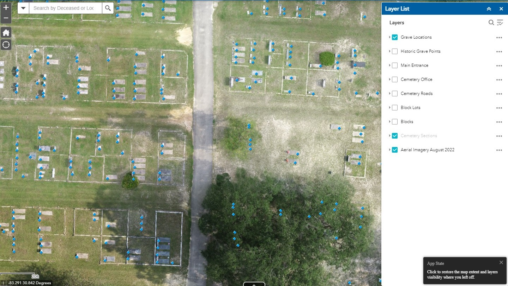
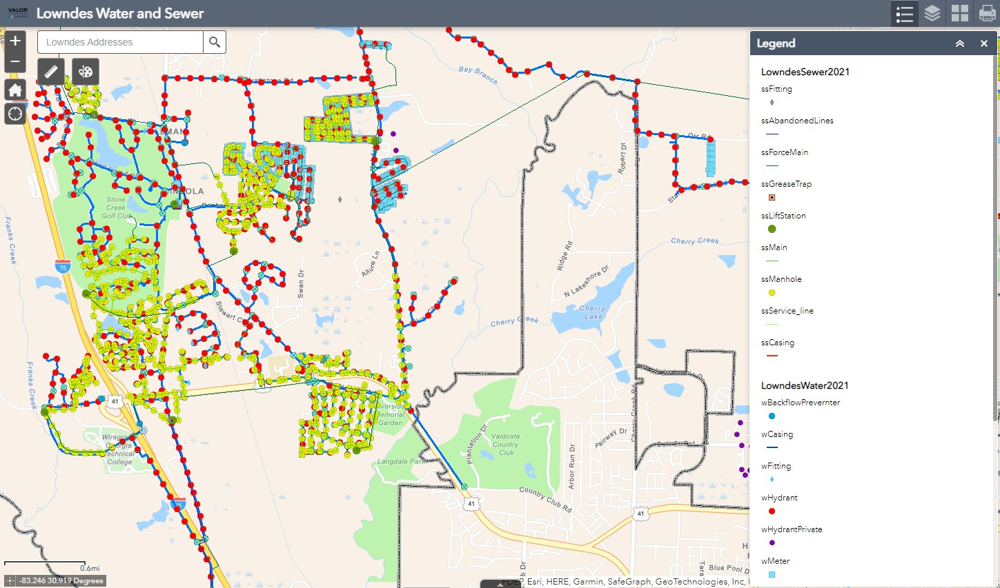
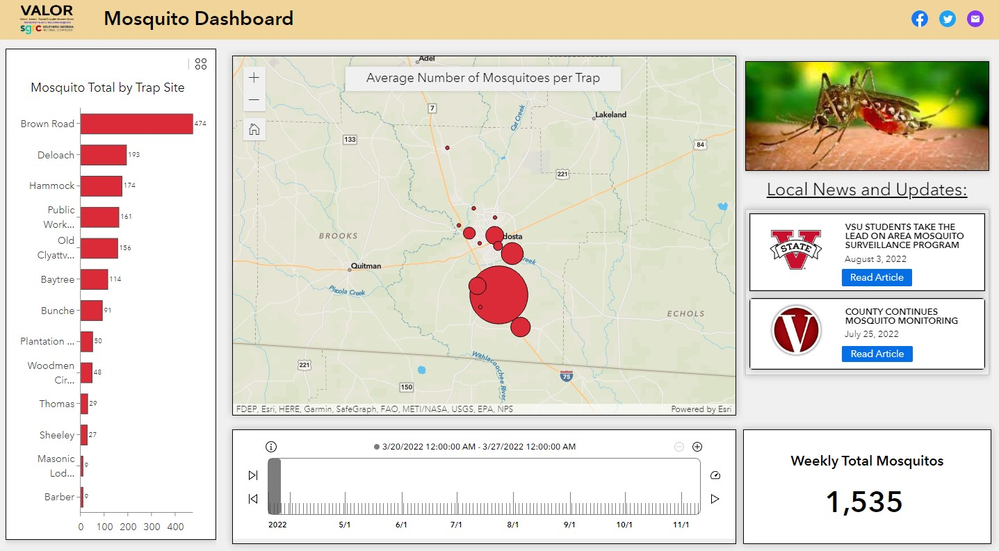
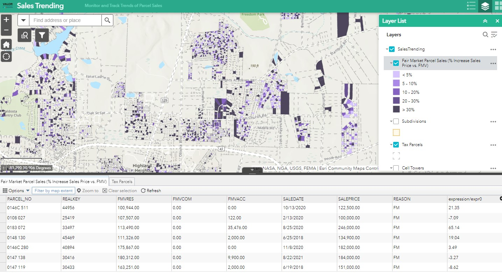
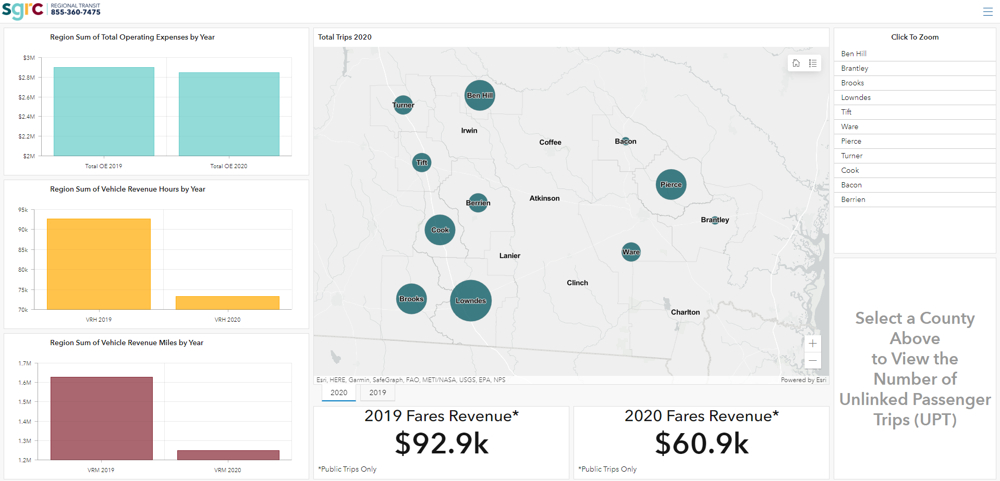

GeoAI · County Government
Pool Detection for Tax Assessment
Challenge: County tax assessor records did not reflect unreported residential pools, resulting in lost property tax revenue.
Approach: Used AI-driven pool detection on county aerial imagery to identify parcels with pools missing from the tax records.
Outcome: Built a repeatable workflow that automatically unflags parcels as tax data is updated, helping the county recover lost revenue.

Remote Sensing · UAS Imagery
Sunset Hill Cemetery Mapping
Challenge: A local town needed high-resolution aerial imagery to support the development of a cemetery mapping application.
Approach: Planned and flew Part 107 certified drone operations to collect imagery across the cemetery grounds.
Outcome: Delivered orthorectified aerial imagery used as the base layer for the town's cemetery mapping application.

Web GIS · Regional Government
Lowndes County Water & Sewer Mapping
Challenge: County utilities staff needed an accessible way to view and query water and sewer infrastructure data in the field.
Approach: Developed a web map application with ArcGIS integrating utility infrastructure data, traffic counts, and parcel information.
Outcome: Provided field crews and office staff with a centralized, interactive map for infrastructure management and planning.

Dashboard · Public Health
Mosquito Surveillance Dashboard
Challenge: Mosquito control operations needed a centralized view of trap data, treatment areas, and surveillance results.
Approach: Built an interactive dashboard consolidating mosquito trap data with spatial visualizations of treatment zones and species counts.
Outcome: Enabled data-driven decision-making for targeted mosquito control operations.

Spatial Analysis · Business Intelligence
Sales Trending Analysis
Challenge: Needed to identify geographic patterns in sales performance to support strategic planning and resource allocation.
Approach: Analyzed multi-year sales data spatially to identify trending markets, coverage gaps, and regional performance patterns.
Outcome: Delivered actionable spatial insights that informed territory planning and market strategy.

Dashboard · Transportation
Transit Dashboard
Challenge: Transit operations needed a real-time view of route performance, ridership, and service metrics.
Approach: Designed a geographic dashboard integrating transit route data with ridership statistics and service area coverage.
Outcome: Provided transit planners with an at-a-glance tool for monitoring and optimizing service delivery.